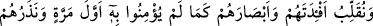
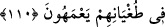

şöyle dediler:
– Safa tepesini bizim için altın yap veya ölülerimizden bazılarını dirilt de senin
dediklerinin gerçek mi yoksa yalan mı olduğunu soralım. Ya da bize melekleri göster de
onlar senin doğruluğuna şâhitlik etsinler.”
Hz. Peygamber (a.s.): “Dediklerinizin bir kısmını yaparsam beni tasdik edecek
misiniz?” deyince:
– “Evet vallahi, eğer dediklerimizi yaparsan sana hepimiz tâbi oluruz.” dediler.
Müslümanlar da Rasûlullah (s.a.)’den kâfirlerin îmana gelmesi için bazı mûcizeler
göstermesini istediler.
Bunun üzerine Hz. Peygamber (a.s.) dua etmeye niyetlendi. Cebrail (a.s.) gelerek:
“Eğer istersen dilediğin meydana gelir. Fakat mûcize gösterdiğin halde onlar îman
etmezlerse Allah Teâlâ onların tümünü helâk eder. İstersen onları kendi hallerine bırak
da tevbe edecek olanlar tevbe edip kurtulsun.” dedi. Allah Teâlâ bunun üzerine bu âyeti
indirdi.
Kureyş kâfirleri, “eğer kendilerine” teklif ettikleri gibi “bir mûcize gelirse ona
mutlaka inanacaklarına olanca güçleriyle” en ağır ve güçlü olarak “Allah’a yemin
ettiler.”
Onlara “de ki:” Bütün “mûcizeler ancak Allah katındadır.” Allah sizin ileri
sürdüğünüz mûcizeleri yaratmaya ve onlardan dilediğini göstermeye kadirdir. Bunlar
benim gücüm ve iradem dahilinde değildir. Ben sadece bir korkutucuyum.
Sonra Allah Teâlâ, müslümanlara hitâben mûcizeler gösterilmemesinin hikmetini
şöyle açıklamıştır: “Hem siz ne bileceksiniz ki o mûcize gelmiş olsa da onlar yine
inanmazlar!” Yani, onların teklif ettikleri mûcize geldiğinde inanacaklarını size hangi
şey bildiriyor? Bilakis onlar eski halleri üzere küfür ve inatlarında devam ederler. Yani
siz bunu bilmiyorsunuz ki onların îman etmelerini arzulayarak bir mûcize gelmesini
temenni ediyorsunuz.
Âyette Allah onların durumunu bildirmediği için bunun asla bilinemeyeceği ortaya
konulmuştur. Yine onların yeminlerinin sahte olduğu ve ezelî rahmetin yardım etmediği
kimselere apaçık delillerin de fayda vermeyeceği açıklanmıştır.
110. Yine O’na îman etmedikleri ilk durumdaki gibi onların gönüllerini ve
gözlerini ters çeviririz. Ve onları şaşkın olarak azgınlıkları içerisinde bırakırız.
“Evvelce ona” ayın ikiye bölünmesi ve benzeri mûcizelere “inanmadıklarında
olduğu gibi onların kalplerini ve gözlerini ters çeviririz.”
Bu cümle, önceki cümleye atfolunmuştur. Buna göre manası: “Hem siz ne bileceksiniz